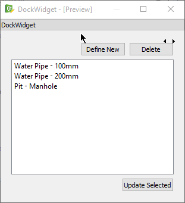
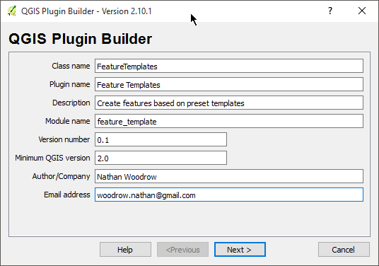
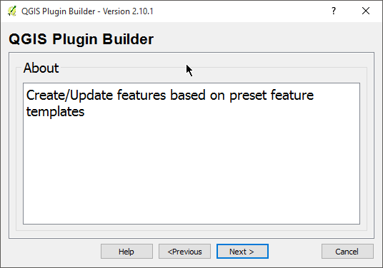
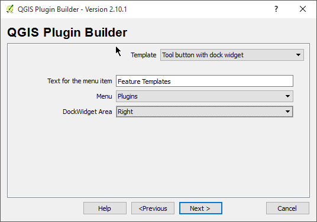
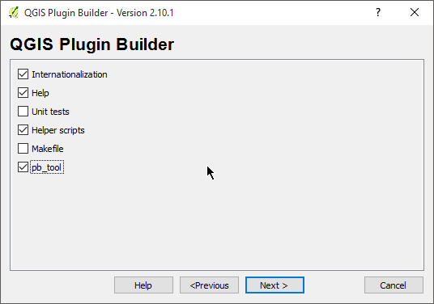
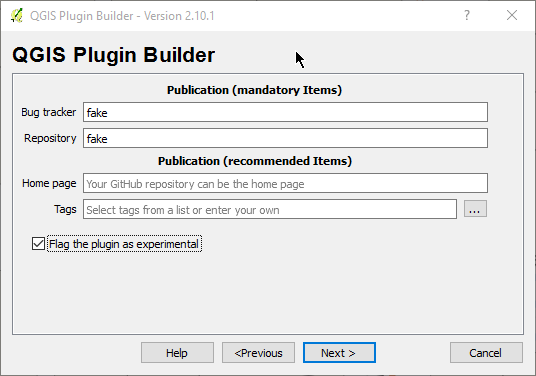
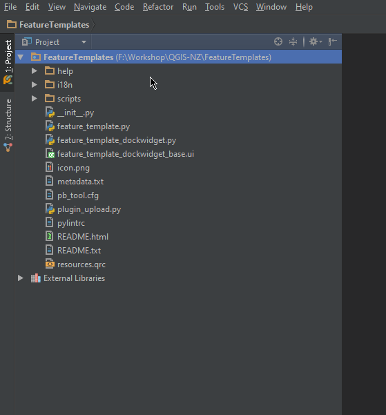
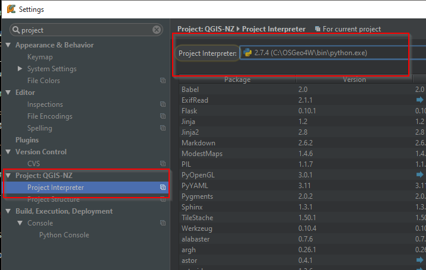

Getting Started - Creating the base plugin
Goals
- Generate a plugin using the QGIS plugin builder
- View plugin layout
- View plugin metadata
- View main plugin code
Handy Links
Here are some links that we might use throughout the workshop or you can use later when building a plugin or working with the QGIS Python API.
- QGIS API: http://qgis.org/api/
- 2.8 http://qgis.org/api/2.8/
- QGIS cookbook: http://docs.qgis.org/testing/en/docs/pyqgis_developer_cookbook/
Note: We will be using 2.8 as the target install for PyQGIS. However as the API is stable between 2.x version, using 2.10 is also fine.
Plugin goals
The goal of the workshop is to create a plugin but not just a “here is how to open a layer” type plugin, although they are handy, they don’t get you very far and the cookbook already covers that. Let's build something that touches on different parts of the application, from symbols, layers, features, and even drag and drop if we get time.
The final goal of the plugin is to create something that can update QGIS features based on a pre-defined templates.
Here is an example of the UI that we are going to build:

Creating the plugin
We are not going to start from nothing, that doesn’t really help us, so we are going to use the QGIS plugin builder to get up and running.
This is only so we can get something started. A more correct plugin, something that you can publish for others to use, can need more work and polish.
QGIS Plugin builder
For this we will need the QGIS plugin builder. This is a plugin you can install in QGIS that will generate a plugin for you that is ready to go.
- Open QGIS and install the QGIS Plugin Builder Plugin
- From
Plugins -> Plugin Builderrun the plugin
The plugin builder will gives us a screen to fill in all the information that is needed. Go ahead and complete the information as shown below:
 
Be sure to select Tool button with dock widget as the template

One should always add unit tests to our code but we won't here because it's just an example :P
We are also using pb_tool so untick Makefile

If you want to publish the plugin for others it needs to have a bug tracker and code repository. However we can put in stub entries for those now, as we don't need it yet and it's only enforced at publish time.

The next screen will ask you to select a folder to save the plugin into. Save it into a known place for you. It doesn't matter where just somewhere easy to get to.
PyCharm project
We need to create a PyCharm project from the folder that was generated by the plugin builder.
- Open PyCharm and select
File -> Openand select the folder that you just created using the plugin.

- Open
File -> Settings - Search for
Project - Set the Project Interpreter to the QGIS installed one.

Note: On Linux/OS X this is the default Python install. No need to do anything here.
Plugin layout break down
Before we get started it’s best to explain the basic layout of the simple plugin we have here
__init__.py- The main entry point for this plugin that is called when QGIS loads the pluginLICENSE- Well I’m sure you can guessmetadata.txt- The plugin metadata that is used when uploading the plugin to the plugin repository and when QGIS loads the pluginfeature_template.py- The main code file for this plugin. We will be adding a few more of these throughout the workshopREADME.txt- The README for the pluginpb_tool.cfg- Thepb_toolconfig file. Used to build and deploy the pluginresoruces.qrc- Qt resource file used to add icons to buttons and widgets.feature_template_dockwidget_base.ui- The base dock widget UI base file. We will open this in Qt Designer a bit laterfeature_template_dockwidget.py- Core logic for thefeature_template_dockwidget_base.ui
There is also a scripts folder and help folder which we won't go into at this stage.
Metadata
Open the metadata.txt file in PyCharm and have a look at the layout. This file contains all the information that used by QGIS when it displays the plugin in the installer.
__init__ file and plugin entry point
Open up the __init__ file. This file marks this folder as a Python package and QGIS can load a Python package
as a plugin if the package setup is right.
Inside __init__ you will find
def classFactory(iface):
"""Load FeatureTemplates class from file FeatureTemplates.
:param iface: A QGIS interface instance.
:type iface: QgsInterface
"""
#
from .feature_template import FeatureTemplates
return FeatureTemplates(iface)
The classFactory method is called when QGIS loads the plugin. QGIS will pass the API interface object (QgisInterface)
into your plugin. This object is normally used to talk to the main QGIS UI interface.
The main thing this function does is return an instance of the class for your plugin (FeatureTemplates). FeatureTemplates can be
found in feature_template.py
PluginCore
Let's take a quick look at feature_template.py before we do a test plugin install. There is a lot of stuff in this
template but we just need to have a quick look at a few methods
The two main important methods here are initGui and unload.
initGuiis called when the plugin is loaded from QGIS. Called when QGIS is loaded. We normally setup events, buttons, etc hereunloadis called when the plugin is uploaded from the interface. We do things that remove the plugin from the QGIS interface.
Important!
Don't skip this step as the plugin will not load correctly
Before we move on we need to update one thing the plugin builder doesn't generate correctly.
At the top replace: import resources with import resources_rc